Трижды «Хорошее место» ЯндексаЛучшая стоматология Москвы по рейтингу 2ГИСОдобрены Стоматологической ассоциацией РоссииКТ в подарокЛечение во снеТрижды «Хорошее место» ЯндексаЛучшая стоматология Москвы по рейтингу 2ГИСОдобрены Стоматологической ассоциацией РоссииКТ в подарокЛечение во сне
Полное отсутствие зубов на обеих челюстях. Поставили All‑on‑4 на верхнюю и нижнюю, адаптационный протез зафиксировали сразу, постоянный – через неделю.
Пациентка Е. Ш., 14 → 21 сентября 2026. Расчёт платежа: пакет 189 000 ₽ в рассрочку от клиники на 36 месяцев без переплат.
Ещё истории: кто с чем приходил и что получилось
ДоПосле
Николай
Зубы разрушены, часть отсутствует, жевать невозможно. Удаление, имплантация Osstem, несъёмный протез с коронками из циркония.
ДоПосле
Андрей
Пародонтит, подвижность и разрушение оставшихся зубов. Санация, импланты Riellens, несъёмный протез на циркониевых коронках.
ДоПосле
Владимир
Полное отсутствие зубов на челюсти, ношение съёмного протеза. All‑on‑4 на имплантах Snucon, несъёмный протез в день операции.
ДоПосле
Виталий
Адентия нижней челюсти, атрофия костной ткани. Имплантация Nobel по 3D‑шаблону, несъёмный протез с армирующей балкой.
Фотографии опубликованы с согласия пациентов. Результат индивидуален и зависит от клинической ситуации.
Восстановим жевательную функцию и остановим обвисание овала лица
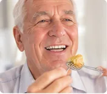
Восстановление жевательной функции
Поможем вернуть радость от еды. Протез с опорой на импланты не двигается и не натирает. Нагрузку увеличивают по рекомендациям врача: сроки адаптации и допустимые продукты зависят от этапа лечения.
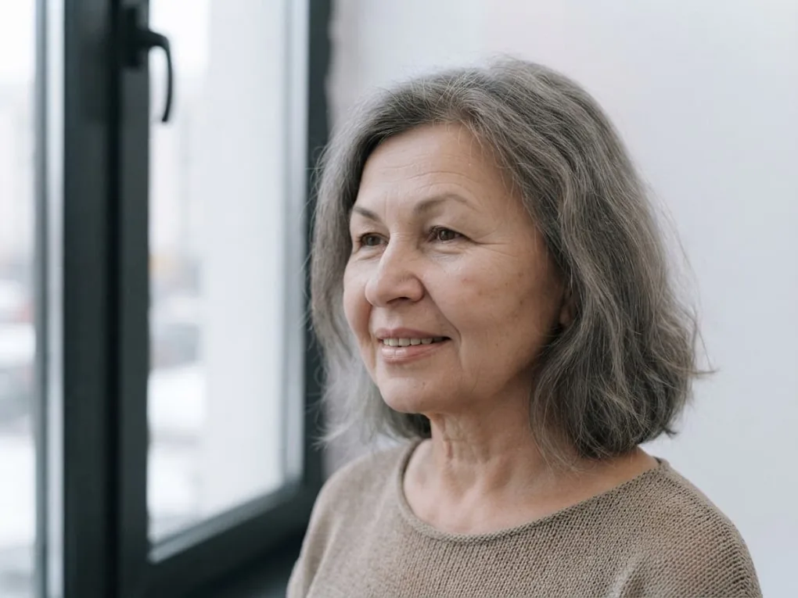
Остановим нарушение пропорций лица
Сохраним вашу природную эстетику. При планировании врач учитывает поддержку мягких тканей и пропорции нижней трети лица. Цель – компенсировать изменения внешности, связанные с потерей зубов.
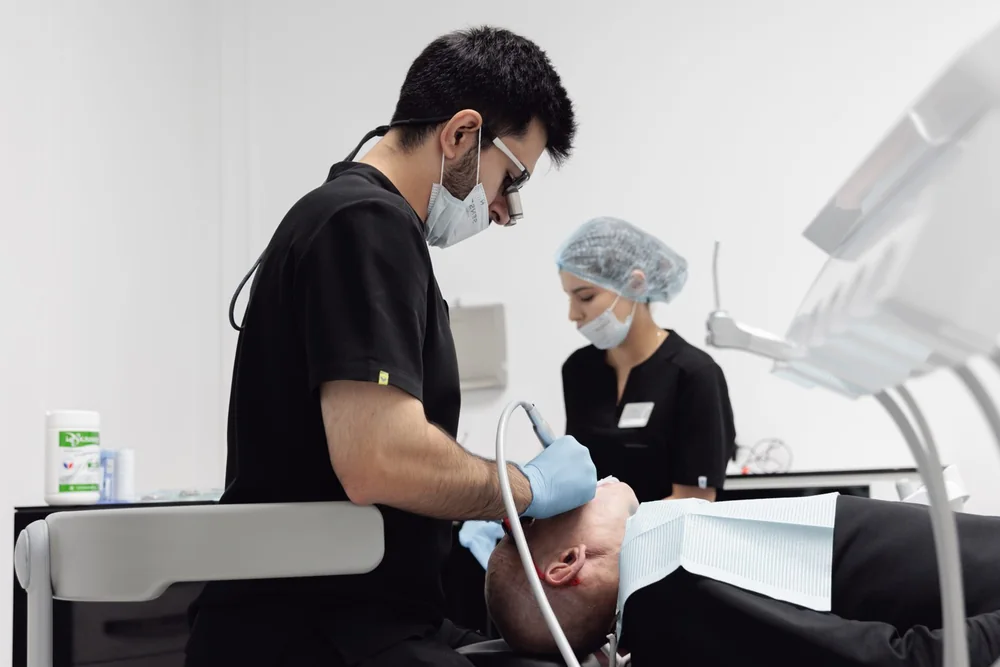
Без боли и неприятных ощущений
Проведём операцию методом седации – комфортного лечения во сне, без препаратов, содержащих наркоз.
Вы спите, а не терпите: препараты мягче наркоза, пробуждение спокойное. После операции восстановитесь в комнате отдыха под присмотром врача. На консультации разберём ваши опасения и подберём вариант обезболивания.
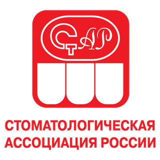
Одобрены Стоматологической ассоциацией России
Клиника работает по стандартам СтАР. Главный врач сети участвовал в организации четырёх инновационных центров стоматологии СтАР и входит в правление Ассоциации развития инновационной стоматологии.
Беспроцентная рассрочка или кредит на выгодных условиях
Обсудите график оплаты после того, как понятны план и общая стоимость.
Комфортный график
Поможем подобрать график платежей, который будет вам удобен.
Рассрочка 0%
Рассрочка от клиники без переплат – до 36 месяцев.
Выгодный кредит
Также возможен кредит от банков-партнёров. Решение принимает банк.
Калькулятор платежа
ориентировочно
в месяц
189 000 ₽ – пакет на одну челюсть: 4 импланта Snucon, адаптационный протез, анестезия и материалы. Условия зависят от выбранной программы; решение по кредиту принимает банк.
All-on-4 – не единственное решение
Сначала выясним, какие зубы можно сохранить. Затем предложим подходящий путь восстановления и объясним альтернативы полной замене зубов.
01
Нет всех зубов на челюсти
Можно рассмотреть восстановление полного ряда на имплантах, включая All-on-4.
02
Тяжёлое поражение тканей вокруг зубов
При выраженном пародонтите сначала оцениваем прогноз каждого зуба.
03
Отсутствует часть зубов
Рассматриваем восстановление отдельных участков и сохранение оставшихся зубов.
04
Потеряно много зубов
Сравниваем частичное протезирование и восстановление всей челюсти.
ALL SMILES
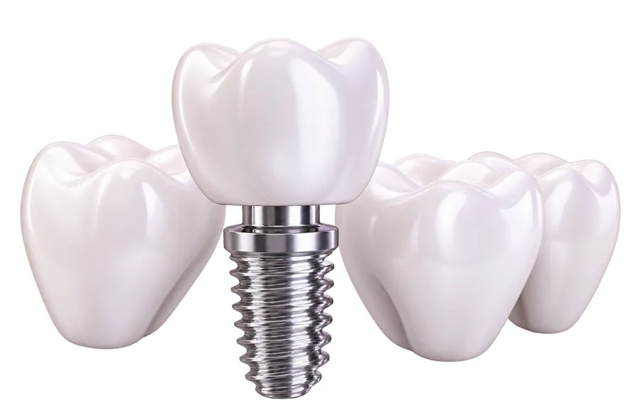
Возможны варианты без полной замены
Лечение и сохранение собственных зубов · восстановление отдельных зубов на имплантах · мостовидные и съёмные протезы по показаниям.
Частичное отсутствие зубов само по себе не означает, что нужен All-on-4. Выбор зависит от диагностики и прогноза оставшихся зубов.
Подбор за минуту
Ответьте на 4 вопроса – получите варианты и бонусы
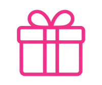
−15%на любой план лечения
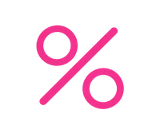
0%рассрочка от клиники
1 / 4
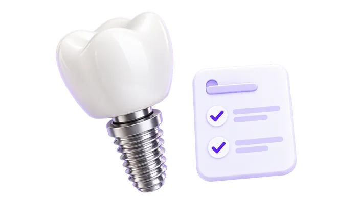
Используем лучшие бренды имплантов
У каждой системы свои варианты поверхности, формы и протезных компонентов. Врач выбирает модель под вашу ситуацию и будущую конструкцию.
Южная Корея
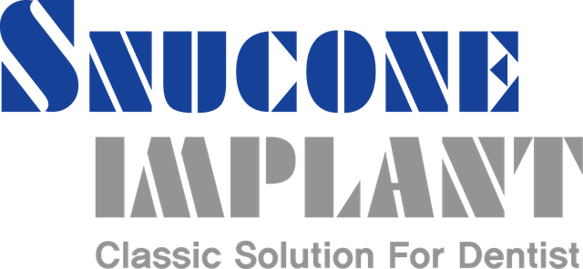
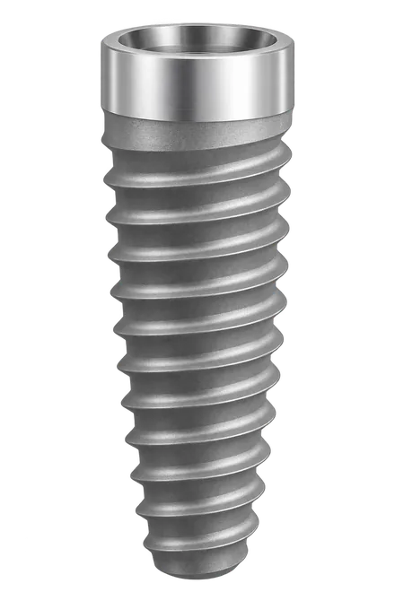
SLA-поверхность по технологии, разработанной с немецким партнёром
Внутренний шестигранник с конусом 11° – плотная посадка протеза
Базовое решение центра имплантации на Динамо
всё на 4-х под ключ189 000 ₽
Бразилия
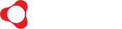
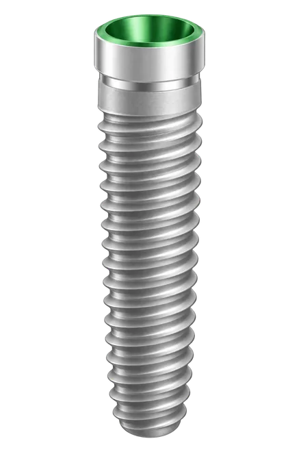
Технически чистый титан Grade 4 без алюминия и ванадия
Модифицированная SLA-поверхность, широкий выбор размеров
Протоколы немедленной нагрузки на 4 и 6 опорах
всё на 4-х под ключ349 000 ₽
Премиум
Швейцария
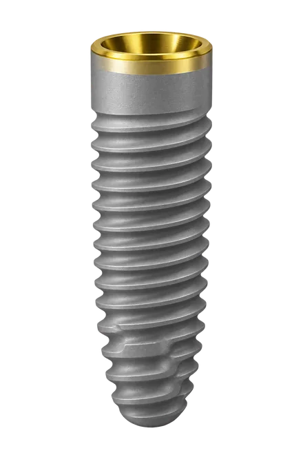
Авторы протокола All-on-4 – более 25 лет клинических данных
Поверхность TiUnite, доказанная остеоинтеграция
Пожизненная программа замены импланта производителем
всё на 4-х под ключпо расчёту
Работаем над естественной эстетикой вашей улыбки
Подберём форму и цвет эмали, подходящие к вашему типу лица.
Диагностика, согласование формы и цвета, изготовление и проверка удобства – отдельные шаги вашего плана. Протез проектируем по CAD/CAM с учётом анатомии челюсти и прикуса.
A2Естественный тёплый оттенок
Выберите оттенок, чтобы узнать о нём больше
A1Светлый тёплый оттенок
A2Естественный тёплый оттенок
A3Более насыщенный тёплый оттенок
B1Светлый нейтральный оттенок
B2Мягкий желтоватый оттенок
C1Сдержанный сероватый оттенок
D2Красновато-серый оттенок
BLЯркий отбелённый оттенок
Иллюстративные образцы оттенков VITA и Bleach. Цвет на экране может отличаться. Финальный оттенок подбирает врач вместе с вами на примерке.
1
3D КТ с ИИ-анализом Diagnocat – 0 ₽
2
Цифровой план и выбор оттенка
3
Протез с кобальт-хромовой балкой
Второе мнение
Пришлите план лечения – получите скидку 15%
Разберём чужой план по пунктам: что действительно нужно, что лишнее, где спрятаны доплаты. Ответим понятным языком и пришлём свой расчёт со скидкой 15%.
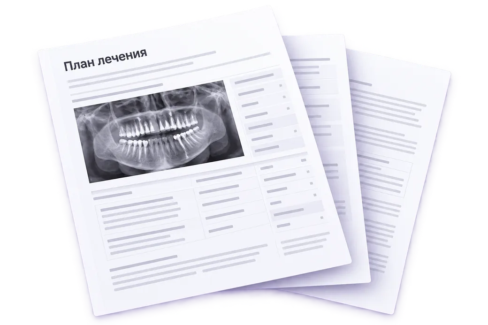
Сопровождение и гарантии – в договоре
До начала лечения согласуем план, стоимость и обязательства клиники. Условия сопровождения и гарантии фиксируем в договоре и приложениях.
1
Консультация и диагностика
Выясняем ситуацию и объясняем, какие обследования нужны. КТ и консультация имплантолога – 0 ₽.
2
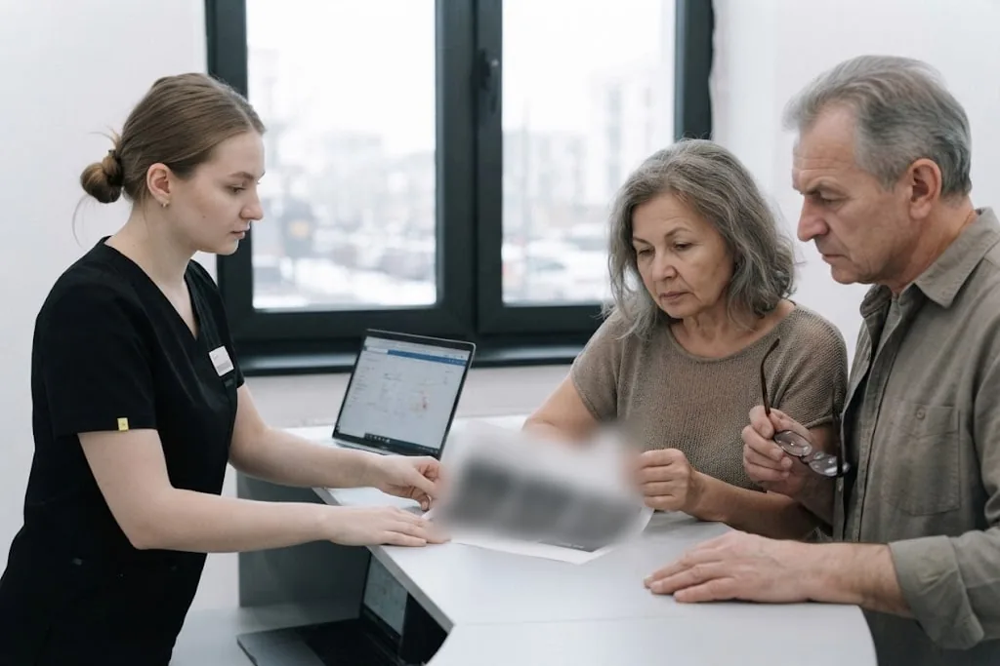
Выбор решения и стоимость
Согласуем вариант лечения, этапы и расчёт до начала работ. Три плана от трёх специалистов.
3
Подготовка и лечение
Удаление, установка имплантов и адаптационный протез – в один визит.
4
Протезирование
Согласуем внешний вид зубов, проверяем прикус и удобство.
5
Адаптация и поддержка
Рекомендации по уходу, осмотры и коррекции по плану. Остаёмся на связи 24/7.
6
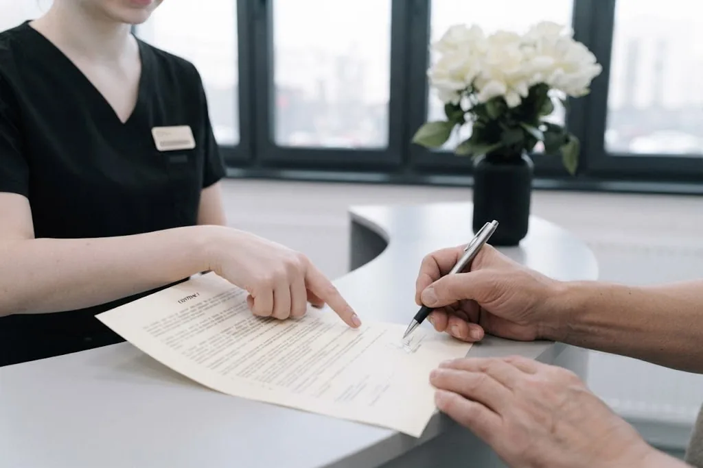
Гарантия и обслуживание
Сроки, условия гарантии и порядок обращения прописаны в договоре.
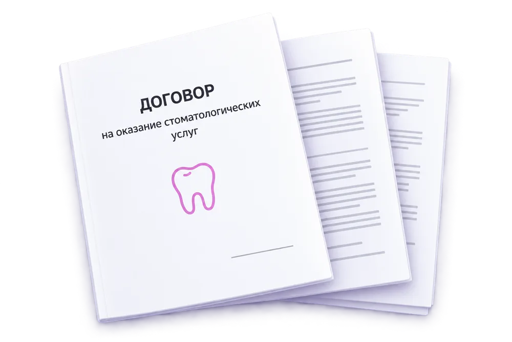
Изучите договор до консультации
Объём услуг, стоимость, порядок оплаты, условия гарантии и обязанности сторон.
Пришлём образец на почту или покажем на консультации.
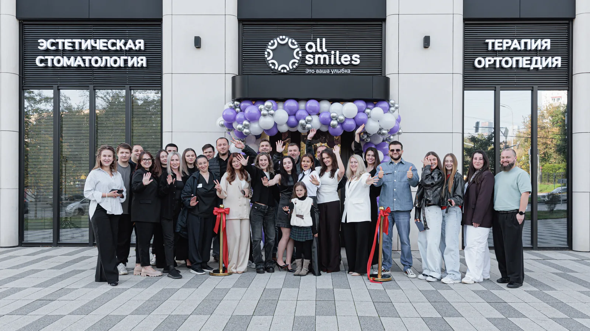
О клинике
Центр имплантации All Smiles в квартале ВТБ Арена Парк, в двух минутах от метро «Динамо». Часть сети All Smiles: рейтинг 5,0 на Яндекс Картах и 2ГИС, работа по стандартам Стоматологической ассоциации России.
Диагностика на месте3D КТ с ИИ-анализом Diagnocat
Своя операционнаяимплантация и протез в один визит, лечение во сне
Консилиум врачейстаж от 4 до 30 лет, сложные случаи
Ежедневнос 9:00 до 21:00, без выходных
Консилиум врачей с практикой от 4 до 18 лет
Собираем консилиум для сложных случаев: специализируемся на имплантации при патологиях челюсти и минимальном объёме кости.
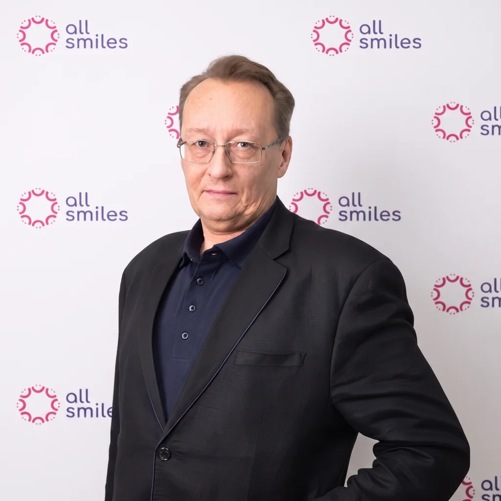
Главный врач сети · стоматолог‑ортопед
Берлов Антон Владимирович
Доктор медицинских наук, профессор. Стаж более 30 лет.
Окончил МГМСУ им. Семашко (1996), ординатура ЦНИИС (1997–1999). Профессор кафедры стоматологии МИНО, академик Российской академии естествознания. Участвовал в открытии четырёх инновационных центров стоматологии СтАР, член правления Ассоциации развития инновационной стоматологии.
Орден св. Александра Невского«За труды и отечество» I степени
Медаль«За заслуги в здравоохранении»
Медаль Уильяма Гарвеяи медаль «European quality»
Учёные степенидоктор психологических наук (2008), доктор медицинских наук (2010), профессор ВАК (2012)
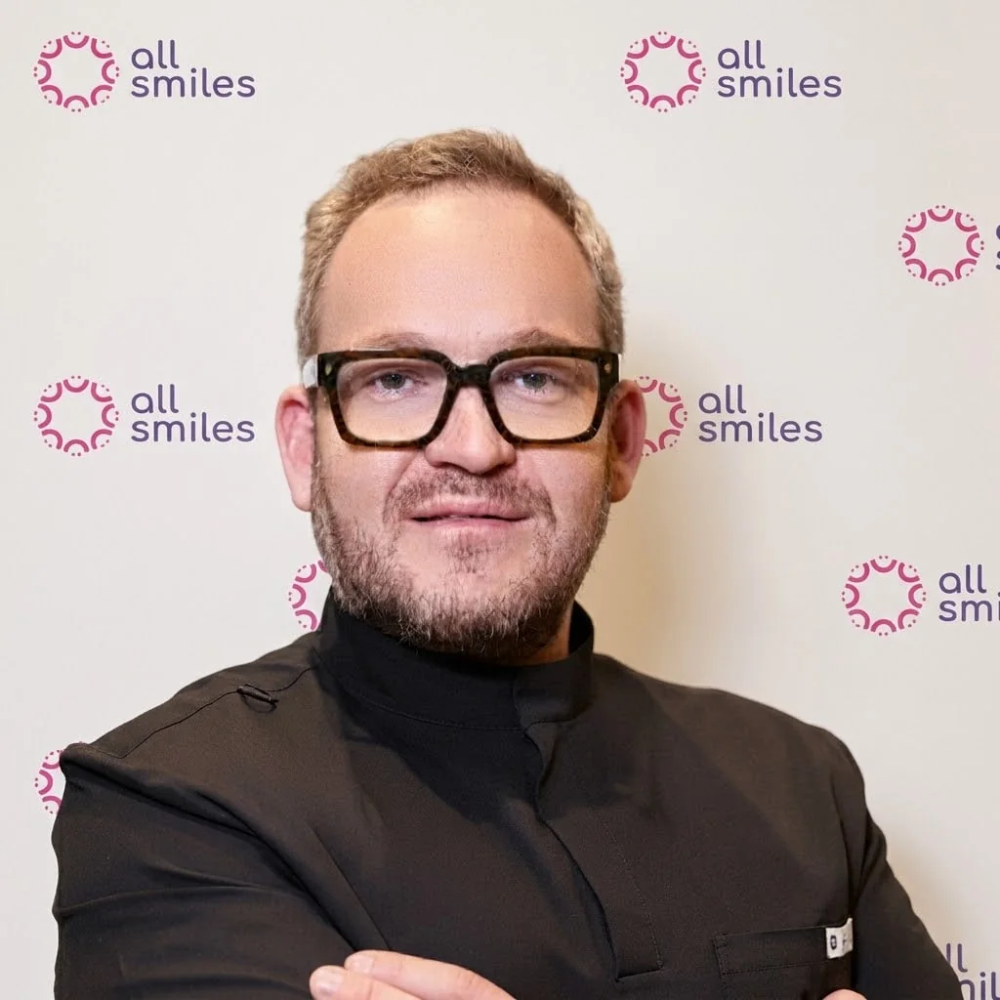
Когон Борис Александрович
Стоматолог‑ортопед · стаж 17 лет
Протезирование на имплантах, лечение зубов.
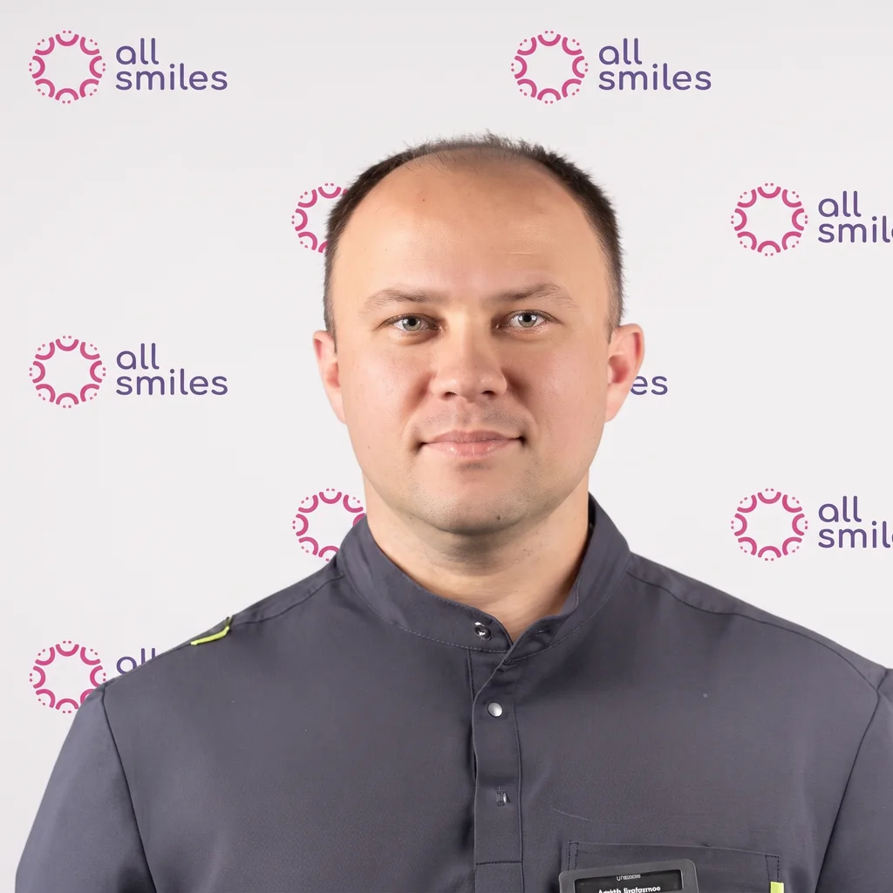
Акчурин Руслан Дамирович
Стоматолог‑хирург · стаж 18 лет
Имплантация, удаление зубов, сложные случаи.
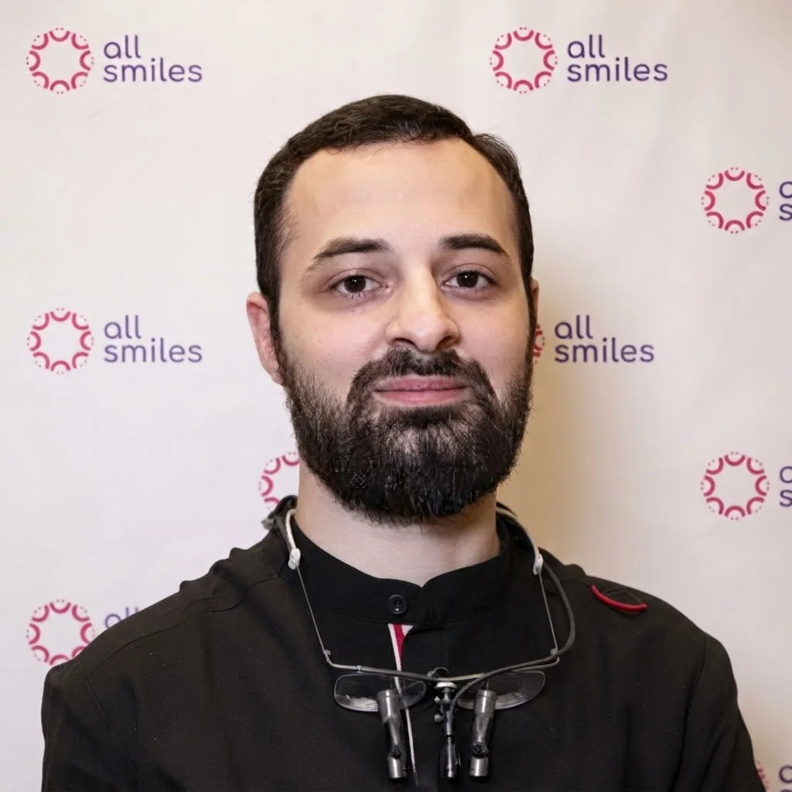
Овсепян Симон Левонович
Стоматолог‑ортопед · стаж 4 года
Протезирование, лечение зубов.
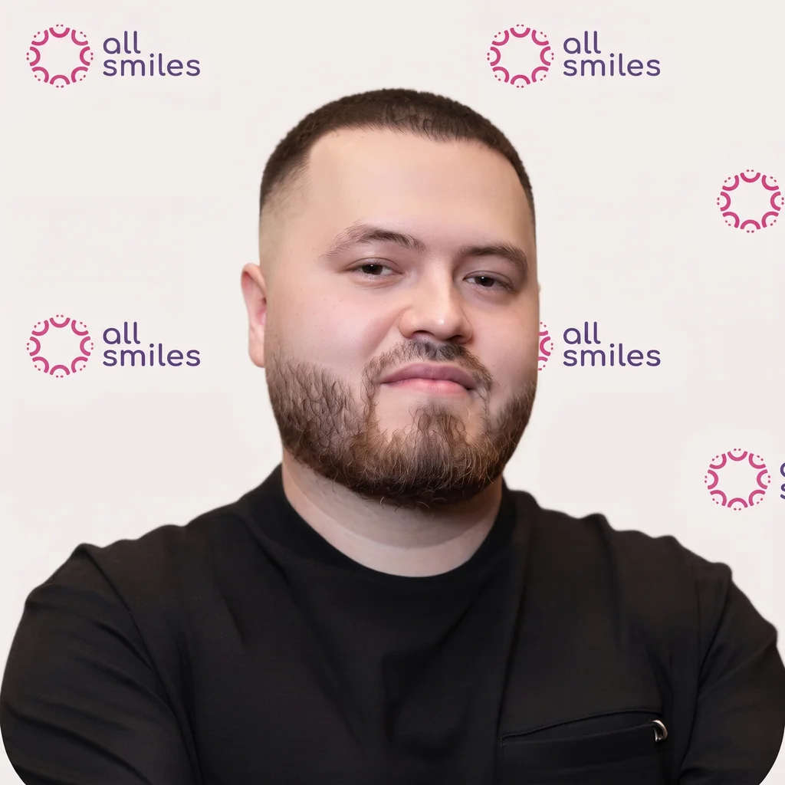
Каландаров Махмуд Маъмурович
Стоматолог‑хирург · стаж 16 лет
Имплантация, удаление зубов.
Остались вопросы?
Как узнать полную стоимость лечения?
Стоимость рассчитывают после диагностики и выбора конструкции. В полном плане отдельно учитывают подготовку, хирургический этап, адаптационный и постоянный протезы. Сравнивайте предложения по составу работ и числу восстанавливаемых челюстей.
Почему важно отдельно обсудить постоянный протез?
Адаптационная и постоянная конструкции относятся к разным этапам лечения. При расчёте бюджета нужно отдельно указать материал, стоимость и срок изготовления постоянного протеза.
Обязательно ли удалять все оставшиеся зубы?
Нет. Частичное отсутствие зубов само по себе не означает необходимость полной замены. Врач оценивает состояние и прогноз каждого оставшегося зуба.
All‑on‑4 – единственный вариант восстановления?
Нет. В зависимости от состояния зубов возможны их лечение, восстановление отдельных участков на имплантах, мостовидные или съёмные конструкции. Подходящий вариант выбирают после осмотра и диагностики.
«Зубы за день» – это всё лечение за один визит?
Нет. Установка протеза – один из этапов. Затем нужны восстановление, контрольные осмотры и постоянное протезирование по плану.
Чем адаптационный протез отличается от постоянного?
Адаптационный протез используется на промежуточном этапе. Постоянную конструкцию изготавливают позже с учётом состояния тканей, прикуса и выбранного материала.
Будет ли больно после операции?
После вмешательства возможны болезненность и отёк. Ощущения и длительность восстановления индивидуальны. Врач даёт рекомендации по обезболиванию и уходу.
Можно ли сразу есть любую пищу?
Нет. В период восстановления и адаптации действуют ограничения по питанию и жевательной нагрузке. Допустимые продукты определяет врач.
Что делать, если протез натирает или мешает говорить?
Нужен осмотр для проверки посадки конструкции и прикуса. Не следует самостоятельно подпиливать протез или терпеть дискомфорт.
Нужно ли снимать протез на ночь и как за ним ухаживать?
Несъёмный протез на имплантах пациент самостоятельно не снимает. Нужны ежедневная гигиена и регулярные профессиональные осмотры.
Схема прохода
Две минуты пешком до клиники
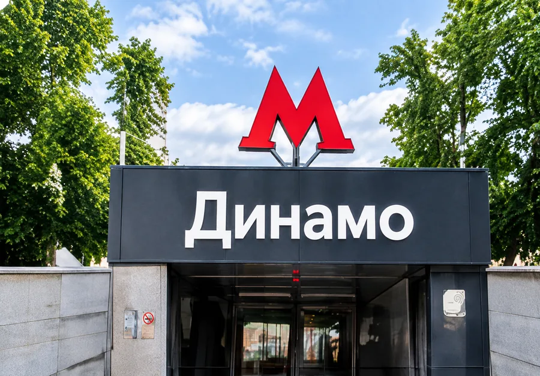
01 · Метро «Динамо»Выходите к Ленинградскому проспекту, в сторону стадиона «Динамо».
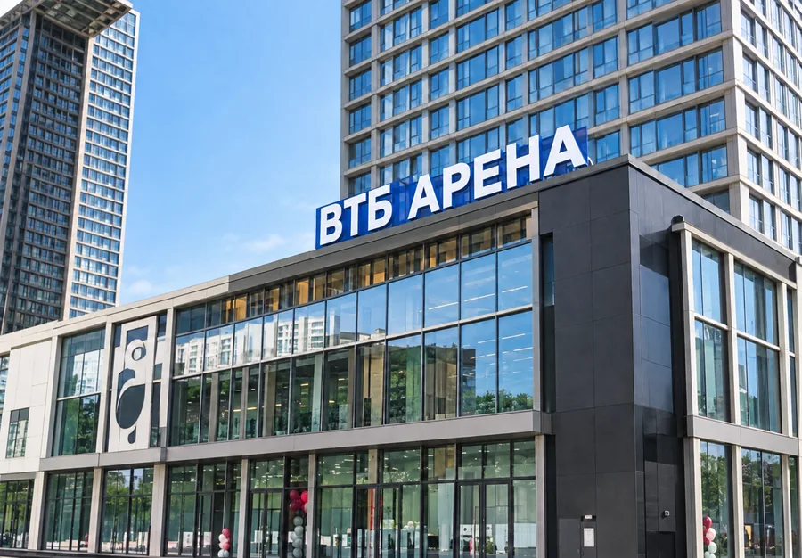
02 · ВТБ Арена ПаркИдите вдоль Ленинградского проспекта до квартала ВТБ Арена Парк, строение 40.
03 · Вход с улицы, 1 этажСтеклянная дверь под вывеской «all smiles». Администратор встретит на ресепшене.
M
01 · Метро «Петровский парк»Выходите в сторону ВТБ Арена Парк и Ленинградского проспекта.
02 · Вдоль Ленинградского проспектаКвартал ВТБ Арена Парк, строение 40 – ориентир вывеска «all smiles» на чёрном фоне.
03 · Вход с улицы, 1 этажСтеклянная дверь под вывеской. Администратор встретит на ресепшене.
Адрес – Москва, Ленинградский проспект, д. 36, стр. 40 ·


 1
1 2
2 3
3